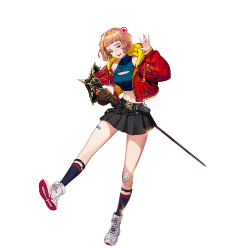
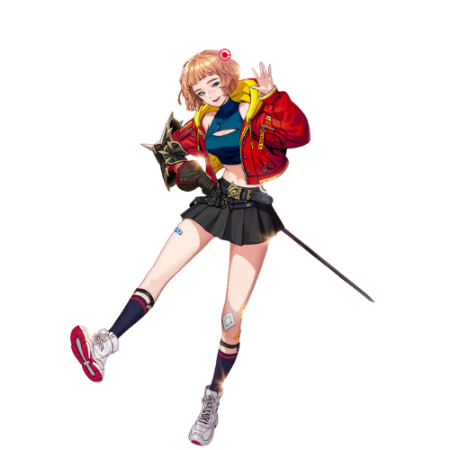

Emma é uma unidade excepcionalmente versátil, adepta a lidar tanto com conteúdo de corrida rápida quanto com batalhas prolongadas e prolongadas devido aos vários efeitos fornecidos por seu conjunto de habilidades. Vamos nos aprofundar em suas habilidades e explorar como fazer de Emma um componente crucial de sua lista. Para começar, é importante discutir sua Habilidade Passiva, já que todas as suas habilidades estão intrinsecamente ligadas a ela. Sua passiva é dividida em duas partes interconectadas: Absorção de Calor e Emissão de Calor. Absorção de Calor é aplicada por todas as habilidades e ataques, sejam entregues ou recebidos, com exceção de Flame Cleave. Este efeito concede a Emma buffs defensivos e utilidade quando certos limites (5/10/15) são alcançados. Por outro lado, Heat Emission fornece buffs ofensivos para a própria Emma ou para toda a sua equipe, dependendo do limite de Absorção de Calor atingido antes de usar Flame Cleave. A estratégia é aumentar consistentemente sua Absorção de Calor ao máximo antes de liberar Flame Cleave, o que fornecerá a Emma e seus companheiros de equipe buffs ofensivos permanentes e utilidade defensiva adicional. Esta utilidade se estenderá aos seus companheiros Hunters assim que Emma atingir avanços suficientes. Além de suas habilidades passivas, as habilidades de Emma apresentam cooldowns curtos, e seu Core Attack não pode ser carregado por Flame Cleave. No entanto, sua habilidade Burn Up compensa isso ao preparar instantaneamente seu Core Attack. A habilidade Ultimate de Emma é distinta, pois seus efeitos variam com base em qual buff passivo está ativo no momento. Se o efeito Heat Emission estiver ativo, você causará dano extra do Ultimate. Por outro lado, se apenas o efeito Heat Absorption estiver ativo, você se beneficiará de cooldown reduzido e um reembolso substancial do seu Power Gauge gasto, embora isso tenha o custo de dano reduzido.